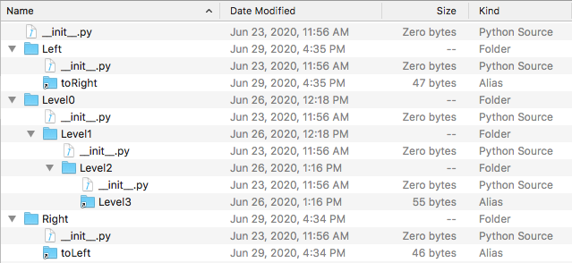

Understanding the Code
My first step towards solving this issue was to understand the code that traversed the files. This code was
located in importcompletion.py
under the find_modules function.
def find_modules(path):
"""Find all modules (and packages) for a given directory."""
if not os.path.isdir(path):
# Perhaps a zip file
return
try:
filenames = os.listdir(path)
except EnvironmentError:
filenames = []
if py3:
finder = importlib.machinery.FileFinder(path)
for name in filenames:
if not any(name.endswith(suffix) for suffix in SUFFIXES):
# Possibly a package
if "." in name:
continue
elif os.path.isdir(os.path.join(path, name)):
# Unfortunately, CPython just crashes if there is a directory
# which ends with a python extension, so work around.
continue
for suffix in SUFFIXES:
if name.endswith(suffix):
name = name[: -len(suffix)]
break
if py3 and name == "badsyntax_pep3120":
# Workaround for issue #166
continue
try:
is_package = False
with warnings.catch_warnings():
warnings.simplefilter("ignore", ImportWarning)
if py3:
spec = finder.find_spec(name)
if spec is None:
continue
if spec.submodule_search_locations is not None:
pathname = spec.submodule_search_locations[0]
is_package = True
else:
pathname = spec.origin
else:
fo, pathname, _ = imp.find_module(name, [path])
if fo is not None:
fo.close()
else:
# Yay, package
is_package = True
except (ImportError, IOError, SyntaxError):
continue
except UnicodeEncodeError:
# Happens with Python 3 when there is a filename in some
# invalid encoding
continue
This first part of the code looks at each file and directory in the path and checks to see if they are a
package. This part also assigns for where to look for submodules. The second part of the code, shown below,
adds more path for the program to look at and finally returns the curent path. This second part is where the
recursion happens and I needed to find a fix.
else:
if is_package:
for subname in find_modules(pathname):
if subname != "__init__":
yield "%s.%s" % (name, subname)
yield name
Finalizing Testing
To further test my solution I thought of a new case where a folder on a Right branch links to a Left branch
and a folder on the Left branch links to the Right branch creating a loop.

Next I had to incorporate my testing into the bpython unittest files. As part the process I replaced my test
folders with temporary ones that would be removed after the test had been run. This saves memory and keeps
my test confined to just the test file.
My first step to writing the test was setting up the temp files. In order to do this I used the tempfile module.
Using a context manager for to ensure the cleanup after the test finishes running, I used the tempfile.TemporaryDirectory()
to set up the filestructure as I described before. Still in the test setup I had the new and improved find_modules()
run through the temporary directory and store a list of its output. Next, I created a list with the acceptable outputs
hardcoded.
In the test I compared the stored outpput with the hardcoded list removing the hardcoded value if it matched any
store value. This ensure that there was no repetition and at the end I checked that the hardcoded list is empty
to ensure no file is skipped. On the surface this work well but, I came to learn that on other people's computer
the Left or Right file would not be accessed in the same order. In order to avoid this problem I had to add both
path options to the hardcoded list and remove a path option when the test ran based on which file first appeared.
import os
import sys
import tempfile
from bpython._py3compat import py3
from bpython.test import unittest
from bpython.importcompletion import find_modules
@unittest.skipIf(not py3, "Test doesn't work in python 2.")
class TestAvoidSymbolicLinks(unittest.TestCase):
def setUp(self):
with tempfile.TemporaryDirectory() as import_test_folder:
os.mkdir(os.path.join(import_test_folder, "Level0"))
os.mkdir(os.path.join(import_test_folder, "Right"))
os.mkdir(os.path.join(import_test_folder, "Left"))
current_path = os.path.join(import_test_folder, "Level0")
with open(
os.path.join(current_path, "__init__.py"), "x"
) as init_file:
pass
current_path = os.path.join(current_path, "Level1")
os.mkdir(current_path)
with open(
os.path.join(current_path, "__init__.py"), "x"
) as init_file:
pass
current_path = os.path.join(current_path, "Level2")
os.mkdir(current_path)
with open(
os.path.join(current_path, "__init__.py"), "x"
) as init_file:
pass
os.symlink(
os.path.join(import_test_folder, "Level0/Level1"),
os.path.join(current_path, "Level3"),
True,
)
current_path = os.path.join(import_test_folder, "Right")
with open(
os.path.join(current_path, "__init__.py"), "x"
) as init_file:
pass
os.symlink(
os.path.join(import_test_folder, "Left"),
os.path.join(current_path, "toLeft"),
True,
)
current_path = os.path.join(import_test_folder, "Left")
with open(
os.path.join(current_path, "__init__.py"), "x"
) as init_file:
pass
os.symlink(
os.path.join(import_test_folder, "Right"),
os.path.join(current_path, "toRight"),
True,
)
self.modules = list(find_modules(os.path.abspath(import_test_folder)))
self.filepaths = [
"Left.toRight.toLeft",
"Left.toRight",
"Left",
"Level0.Level1.Level2.Level3",
"Level0.Level1.Level2",
"Level0.Level1",
"Level0",
"Right",
"Right.toLeft",
"Right.toLeft.toRight",
]
def test_simple_symbolic_link_loop(self):
for thing in self.modules:
self.assertTrue(thing in self.filepaths)
if thing == "Left.toRight.toLeft":
self.filepaths.remove("Right.toLeft")
self.filepaths.remove("Right.toLeft.toRight")
if thing == "Right.toLeft.toRight":
self.filepaths.remove("Left.toRight.toLeft")
self.filepaths.remove("Left.toRight")
self.filepaths.remove(thing)
self.assertFalse(self.filepaths)
if __name__ == "__main__":
unittest.main()